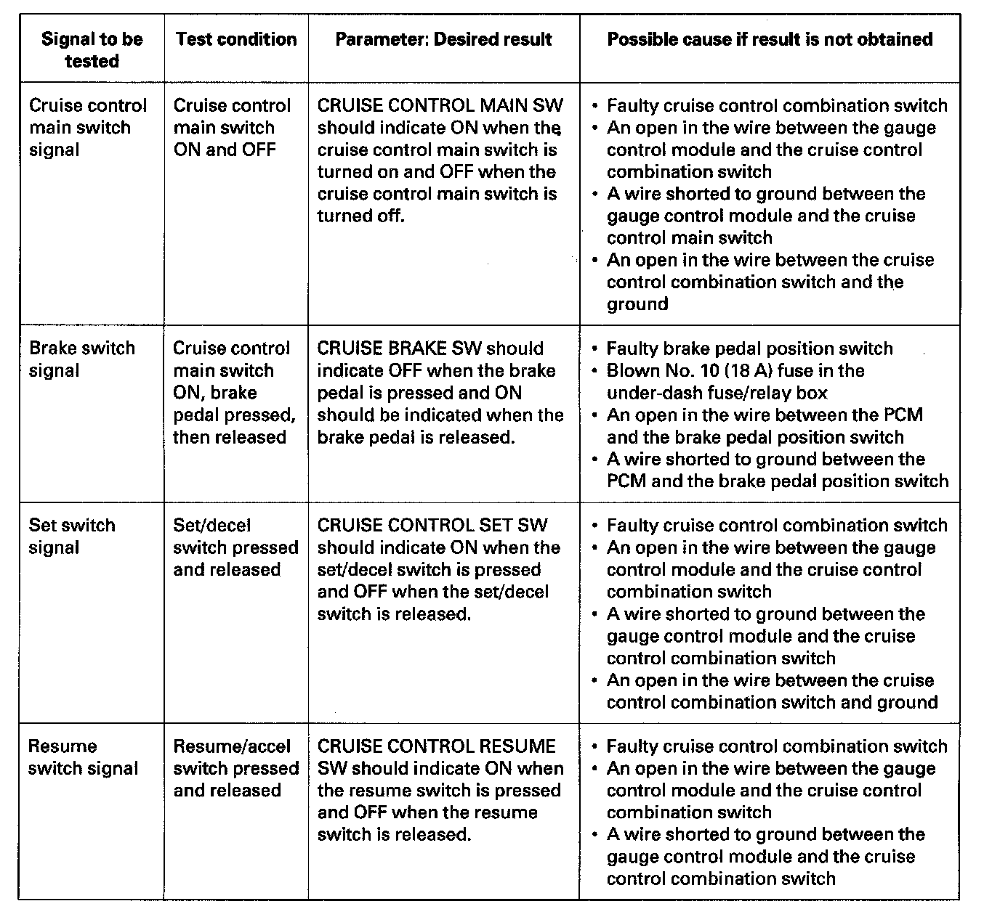
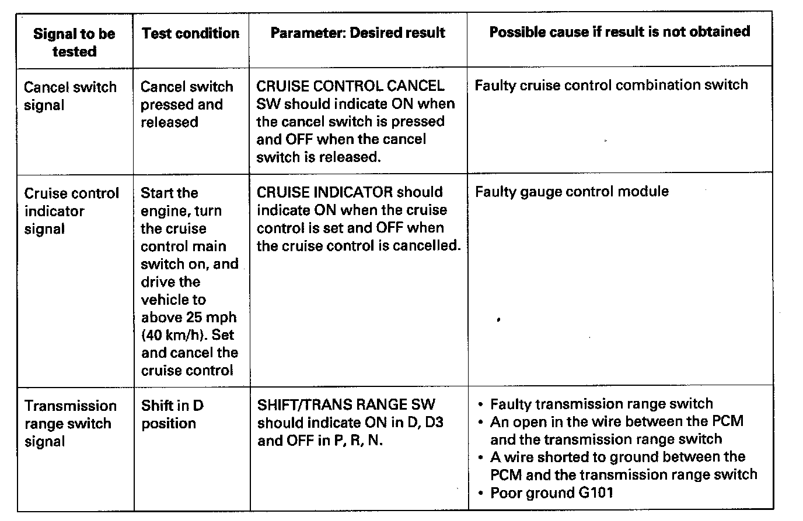

Component Tests and General Diagnostics
Cruise Control Input Test1. Connect the Honda Diagnostic System (HDS) to the Data Link Connector (DLC).
2. Turn the ignition switch ON (II).
3. Make sure the HDS communicates with the vehicle and the PCM. If it doesn't communicate, troubleshoot the DLC circuit.


4. Do the following tests while monitoring parameters in the PGM-FI DATA LIST with the HDS.
NOTE: Intermittent failures are often caused by loose circuit connections. While monitoring cruise control inputs, flex their circuits, and note if any of the test results change.